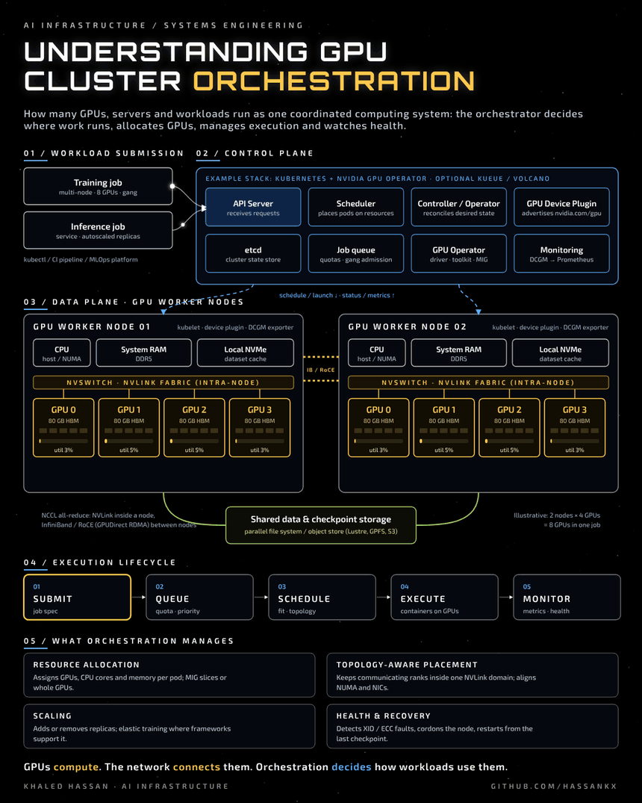

Understanding GPU Cluster Orchestration

GPUs compute. The network connects them. Orchestration decides how workloads use them.
At the infrastructure layer, GPU cluster orchestration handles many operations at once. It coordinates compute resources across multiple physical machines: deciding where each workload runs, managing GPU execution and monitoring system health, rather than treating every GPU as an isolated unit.
1. Workload submission
Training and inference jobs enter through one front door, from kubectl, a CI pipeline or an MLOps platform.
| Workload | Typical shape |
| Training | Multi-node, many GPUs, all ranks must start together (gang scheduling) |
| Inference | Long-running service, replicas scaled with demand |
2. Control plane
Example stack: Kubernetes + NVIDIA GPU Operator + GPU device plugin, optionally with a batch queue such as Kueue or Volcano.
| Component | Role |
| API server | Receives and validates requests |
| Scheduler | Places pods on nodes that have the requested resources |
| Controller / Operator | Continuously reconciles the actual state toward the desired state |
| GPU device plugin | Discovers GPUs on each node and advertises them (for example nvidia.com/gpu) |
| GPU Operator | Installs and manages the driver, container toolkit, device plugin, MIG configuration and DCGM monitoring |
| Job queue | Applies quotas and priorities, and admits multi-GPU jobs as a gang |
| Monitoring | DCGM exporter metrics into Prometheus and alerting |
3. Data plane: GPU worker nodes
Each worker node combines CPUs, system RAM, local NVMe storage and several GPUs.
- Inside a node: GPUs talk over NVLink / NVSwitch, far faster than PCIe.
- Between nodes: jobs scale out over InfiniBand or RoCE, usually with GPUDirect RDMA, while NCCL runs the collective operations (all-reduce, all-gather).
- Storage: a shared data and checkpoint tier (parallel file system or object store) feeds datasets and holds checkpoints, so a job can resume after a failure.
4. Execution lifecycle
Submit → Queue → Schedule → Execute → Monitor1. Submit: the job spec declares images, GPUs, CPU and memory.
2. Queue: quotas, priorities and gang admission decide when it may start.
3. Schedule: the scheduler finds nodes that fit, ideally topology-aware.
4. Execute: containers start on the assigned GPUs; ranks communicate over NVLink and the fabric.
5. Monitor: utilisation, memory, temperature and error counters are collected; failures trigger recovery.
5. What orchestration manages
| Responsibility | What it means in practice |
| Resource allocation | Assigns CPU, memory and GPU devices (whole GPUs or MIG slices) to each workload |
| Topology-aware placement | Aligns placement with the physical layout, for example keeping ranks that communicate most within the same NVLink domain and close to their NICs |
| Scaling | Adjusts replicas, and supports elastic training where the framework allows it |
| Fault tolerance and recovery | Detects hardware errors (such as XID or ECC events), cordons the node, and restarts or fails over the workload from its last checkpoint |
Files
assets/gpu-orchestration.gif: animated diagramassets/gpu-orchestration.mp4: video versionassets/gpu-orchestration.png: still image


The diagram is illustrative: two worker nodes with four GPUs each, eight GPUs in one job. Component names are examples; other schedulers such as Slurm follow the same pattern.
Khaled Hassan · Lead, Research Computing & AI Infrastructure · github.com/hassankx